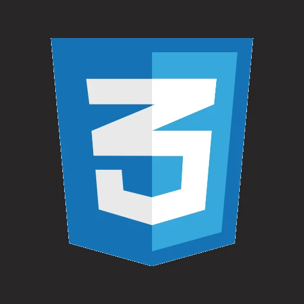
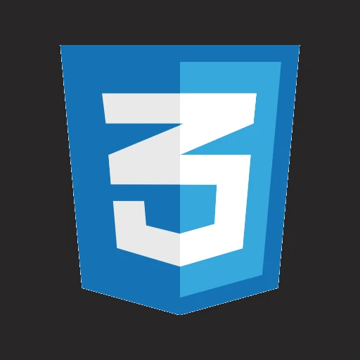

Quem sou eu?
Meu nome é Paulo Vitor Souza Leite, atualmente tenho 15 anos, desde criança eu gostava de tecnologia (coisas de computador, informática), aos 14 anos despertei um interesse em uma área de tecnologia, a programação.
Meu nome é Paulo Vitor Souza Leite, atualmente tenho 15 anos, desde criança eu gostava de tecnologia (coisas de computador, informática), aos 14 anos despertei um interesse em uma área de tecnologia, a programação.
Primeiro, eu comecei a estudar os principios básicos que todo programador ja passou, a lógica de programação. Onde aprendemos a declarar váriaveis, loops, condições, etc.

 

A primeira linguagem que eu comecei a estudar e praticar, foi a linguagem Python, eu tinha escolhido Pyhton porque ela é uma linguagem versátil e de fácil entendimento (o que estava ótimo para mim, no começo). Estudei e pratiquei a linguagem Python por aproximadamente 2 meses.
Depois de estudar Pyhton, eu decidi escolher uma área onde eu passaria a estudar, foi ai que eu escolhi a área de Front-End, onde abrange 2 linguagens de desenvolvimento e 1 de programação